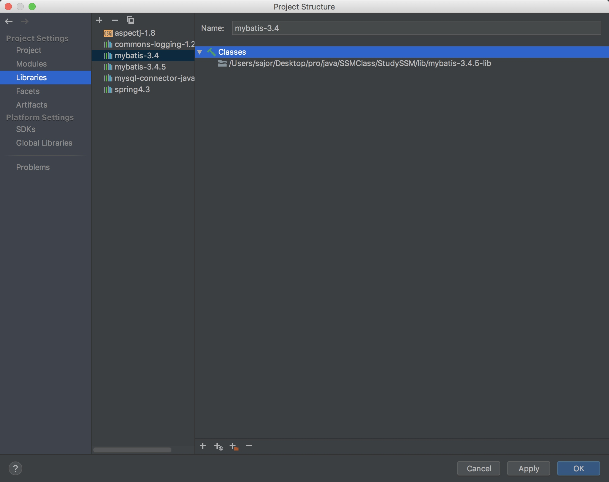
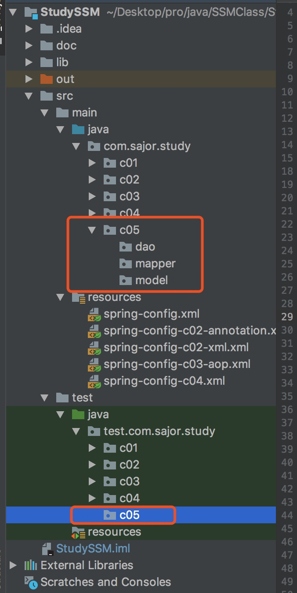

1、配置 MyBatis 开发环境
在工程里面引用 MyBatis 核心 jar 包，以及 MyBatis 依赖的第三方 jar 包。
点击 File>Project Structure...，选中 Libraries，添加 java 引用
选择 lib 中的 Mybatis-3.4.5.jar 包。
再次添加 java 引用，选中 lib 中的 mybatis-3.4.5-lib 文件夹
确认。MyBatis 开发环境即搭建好了。

2、创建新的 Package
com.sajor.study.c05
com.sajor.study.c05.model:存放 vo 对象(业务模型对象)
com.sajor.study.c05.dao:存放 dao 对象(数据库访问对象)
com.sajor.study.c05.mapper:存放 mybatis 数据库表-对象映射文件
test.com.sajor.study.c05
创建完成，包结构如下:

3、在 model 包中创建一个 User 类
在类中声明id、name、sex和email属性，及其对应的getter/setter方法。
package com.sajor.study.c05.model;
public class User {
private int id = 20180101;
private String name = "";
private String sex;
private String email;
public int getId() {
return id;
}
public void setId(int id) {
this.id = id;
}
public String getName() {
return name;
}
public void setName(String name) {
this.name = name;
}
public String getSex() {
return sex;
}
public void setSex(String sex) {
this.sex = sex;
}
public String getEmail() {
return email;
}
public void setEmail(String email) {
this.email = email;
}
@Override
public String toString() {
StringBuffer stringBuffer = new StringBuffer();
stringBuffer.append("id=");
stringBuffer.append(id);
stringBuffer.append("\n");
stringBuffer.append("name=");
stringBuffer.append(name);
return stringBuffer.toString();
}
}
4、在 mapper 包中创建一个映射文件 UserMapper.xml
定义 SQL;
1)根据用户编号获取用户信息;
2)根据用户名模糊查询用户信息列表;
3) 添加用户信息;
4)更新用户信息;
5)删除用户
<?xml version="1.0" encoding="UTF-8"?>
<!DOCTYPE mapper PUBLIC "-//mybatis.org//DTD Mapper 3.0//EN" "http://mybatis.org/dtd/mybatis-3-mapper.dtd">
<!-- namespace 表示命名空间 -->
<mapper namespace="com.sajor.study.c05.mapper.UserMapper">
<!--根据用户编号获取用户信息 -->
<select id="findUserById" parameterType="Integer" resultType="com.sajor.study.c05.model.User">
select * from USER where id = #{id}
</select>
<!--根据用户名模糊查询用户信息列表-->
<select id="findUserByName" parameterType="String" resultType="com.sajor.study.c05.model.User">
select * from USER where name like concat('%',#{value},'%')
</select>
<!-- 添加用户信息 -->
<insert id="addUser" parameterType="com.sajor.study.c05.model.User">
insert into USER(name,sex,email) values(#{name},#{sex},#{email})
</insert>
<!-- 更新用户信息 -->
<update id="updateUser" parameterType="com.sajor.study.c05.model.User">
update USER set name=#{name},sex=#{sex},email=#{email} where id=#{id}
</update>
<!-- 删除用户 -->
<delete id="deleteUser" parameterType="Integer">
delete from USER where id=#{id}
</delete>
</mapper>
5、创建 MyBatis 的核心配置文件 mybatis-config.xml
<?xml version="1.0" encoding="UTF-8" ?>
<!DOCTYPE configuration PUBLIC "-//mybatis.org//DTD Config 3.0//EN" "http://mybatis.org/dtd/mybatis-3-config.dtd">
<configuration>
<!--1.配置环境 ，默认的环境为mysql-->
<environments default="dev">
<!--1.2.配置 id 为 mysql 的数据库环境 -->
<environment id="dev">
<!-- 使用 JDBC 的事务管理 -->
<transactionManager type="JDBC"/>
<!--数据库连接池 -->
<dataSource type="POOLED">
<property name="driver" value="com.mysql.jdbc.Driver"/>
<property name="url"
value="jdbc:mysql://localhost:3306/TestDB?autoReconnect=true&characterEncoding=utf8&useUnicode=true&useSSL=false"/>
<property name="username" value="root"/>
<property name="password" value="123456"/>
</dataSource>
</environment>
</environments>
<!--2.配置 Mapper 的位置 -->
<mappers>
<mapper resource="com/sajor/study/c05/mapper/UserMapper.xml"/>
</mappers>
</configuration>
6、创建一个 DAO 类 UserDAO
对数据库进行增删改查
package com.sajor.study.c05.dao;
import com.sajor.study.c05.model.User;
import org.apache.ibatis.io.Resources;
import org.apache.ibatis.session.SqlSession;
import org.apache.ibatis.session.SqlSessionFactory;
import org.apache.ibatis.session.SqlSessionFactoryBuilder;
import java.io.InputStream;
import java.util.List;
public class UserDAO {
/**
* 根据用户编号查询用户信息
*/
public User findUserById(int id) throws Exception {
// 1、读取配置文件
String resource = "mybatis-config.xml";
InputStream inputStream = Resources.getResourceAsStream(resource);
// 2、根据配置文件构建 SqlSessionFactory
SqlSessionFactory sqlSessionFactory = new SqlSessionFactoryBuilder().build(inputStream);
// 3、通过 SqlSessionFactory 创建 SqlSession
SqlSession sqlSession = sqlSessionFactory.openSession();
// 4、SqlSession 执行映射文件中定义的 SQL，并返回映射结果
User user = sqlSession.selectOne("com.sajor.study.c05.mapper.UserMapper.findUserById", id);
// 5、关闭 SqlSession
sqlSession.close();
return user;
}
/**
* 根据用户名称来模糊查询用户信息列表
*/
public List<User> findUserByName(String s) throws Exception {
// 1、读取配置文件
String resource = "mybatis-config.xml";
InputStream inputStream = Resources.getResourceAsStream(resource);
// 2、根据配置文件构建 SqlSessionFactory
SqlSessionFactory sqlSessionFactory = new SqlSessionFactoryBuilder().build(inputStream);
// 3、通过 SqlSessionFactory 创建 SqlSession
SqlSession sqlSession = sqlSessionFactory.openSession();
// 4、SqlSession 执行映射文件中定义的 SQL，并返回映射结果
List<User> users = sqlSession.selectList("com.sajor.study.c05.mapper.UserMapper.findUserByName", s);
// 5、关闭 SqlSession
sqlSession.close();
return users;
}
/**
* 添加用户
*/
public void addUser(User user) throws Exception {
// 1、读取配置文件
String resource = "mybatis-config.xml";
InputStream inputStream = Resources.getResourceAsStream(resource);
// 2、根据配置文件构建 SqlSessionFactory
SqlSessionFactory sqlSessionFactory =
new SqlSessionFactoryBuilder().build(inputStream);
// 3、通过 SqlSessionFactory 创建 SqlSession
SqlSession sqlSession = sqlSessionFactory.openSession();
// 4、SqlSession 执行添加操作
// 4.1 执行 SqlSession 的插入方法，返回的是 SQL 语句影响的行数
int rows = sqlSession.insert("com.sajor.study.c05.mapper.UserMapper.addUser", user);
// 4.2 通过返回结果判断插入操作是否执行成功
if (rows > 0) {
System.out.println("您成功插入了" + rows + "条数据!");
} else {
System.out.println("执行插入操作失败!!!");
}
// 4.3 提交事务
sqlSession.commit();
// 5、关闭 SqlSession
sqlSession.close();
}
/**
* 更新用户
*/
public void updateUser(User user) throws Exception {
// 1、读取配置文件
String resource = "mybatis-config.xml";
InputStream inputStream = Resources.getResourceAsStream(resource);
// 2、根据配置文件构建 SqlSessionFactory
SqlSessionFactory sqlSessionFactory = new SqlSessionFactoryBuilder().build(inputStream);
// 3、通过 SqlSessionFactory 创建 SqlSession
SqlSession sqlSession = sqlSessionFactory.openSession(); // 4、SqlSession 执行更新操作
// 4.1 执行 SqlSession 的更新方法，返回的是 SQL 语句影响的行数
int rows = sqlSession.update("com.sajor.study.c05.mapper.UserMapper.updateUser", user);
// 4.2 通过返回结果判断更新操作是否执行成功
if (rows > 0) {
System.out.println("您成功修改了" + rows + "条数据!");
} else {
System.out.println("执行修改操作失败!!!");
}
// 4.3 提交事务
sqlSession.commit();
// 5、关闭 SqlSession
sqlSession.close();
}
/**
* 删除用户
*/
public void deleteUser(int id) throws Exception {
// 1、读取配置文件
String resource = "mybatis-config.xml";
InputStream inputStream = Resources.getResourceAsStream(resource);
// 2、根据配置文件构建 SqlSessionFactory
SqlSessionFactory sqlSessionFactory = new SqlSessionFactoryBuilder().build(inputStream);
// 3、通过 SqlSessionFactory 创建 SqlSession
SqlSession sqlSession = sqlSessionFactory.openSession();
// 4、SqlSession 执行删除操作
// 4.1 执行 SqlSession 的删除方法，返回的是 SQL 语句影响的行数
int rows = sqlSession.delete("com.sajor.study.c05.mapper.UserMapper.deleteUser", id);
// 4.2 通过返回结果判断删除操作是否执行成功
if (rows > 0) {
System.out.println("您成功删除了" + rows + "条数据!");
} else {
System.out.println("执行删除操作失败!!!");
}
// 4.3 提交事务
sqlSession.commit();
// 5、关闭 SqlSession
sqlSession.close();
}
}
7、新建一个 Spring 配置文件 spring-config-mybatis.xml
在 spring 配置文件中配置 bean
<?xml version="1.0" encoding="UTF-8"?>
<beans xmlns="http://www.springframework.org/schema/beans"
xmlns:xsi="http://www.w3.org/2001/XMLSchema-instance"
xsi:schemaLocation="http://www.springframework.org/schema/beans http://www.springframework.org/schema/beans/spring-beans.xsd">
<bean id="userDAO" class="com.sajor.study.c05.dao.UserDAO" />
<bean id="user" class="com.sajor.study.c05.model.User" />
</beans>
8、创建测试类 MyBatisTest
先使用插入数据部分插入几条数据，之后再查询、修改、删除。
package test.com.sajor.study.c05;
import com.sajor.study.c05.dao.UserDAO;
import com.sajor.study.c05.model.User;
import org.springframework.context.ApplicationContext;
import org.springframework.context.support.ClassPathXmlApplicationContext;
import java.util.List;
public class MyBatisTest {
public static void main(String[] args) {
try {
ApplicationContext ctx = new ClassPathXmlApplicationContext("spring-config-mybatis.xml");
// 按id查找数据
UserDAO userDAO = (UserDAO) ctx.getBean("userDAO");
User user = userDAO.findUserById(2);
System.out.println(user);
// 按名字查找数据
List<User> users = userDAO.findUserByName("萧");
for (User u : users) {
System.out.println(u);
}
// 插入数据
// UserDAO userDAO = (UserDAO) ctx.getBean("userDAO");
// User user = (User) ctx.getBean("user");
// user.setName("萧大侠");
// user.setSex("11");
// user.setEmail("xiaodaxia@cn.cn");
// userDAO.addUser(user);
// // 修改数据
// UserDAO userDAO = (UserDAO) ctx.getBean("userDAO");
// User user = (User) ctx.getBean("user");
// user.setId(2);
// user.setName("萧大侠gai");
// user.setSex("01");
// user.setEmail("xiaodaxia@cn.cn");
// userDAO.updateUser(user);
// 删除数据
// UserDAO userDAO = (UserDAO) ctx.getBean("userDAO");
// userDAO.deleteUser(1);
} catch (Exception e) {
e.printStackTrace();
}
}
}
9、运行测试类
本文由 Sajor
创作，采用 知识共享署名4.0 国际许可协议进行许可
本站文章除注明转载/出处外，均为本站原创或翻译，转载前请务必署名
最后编辑时间为: 2019-07-28T21:40:33+08:00